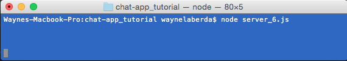
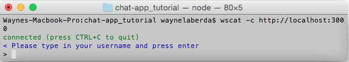
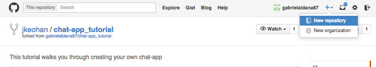
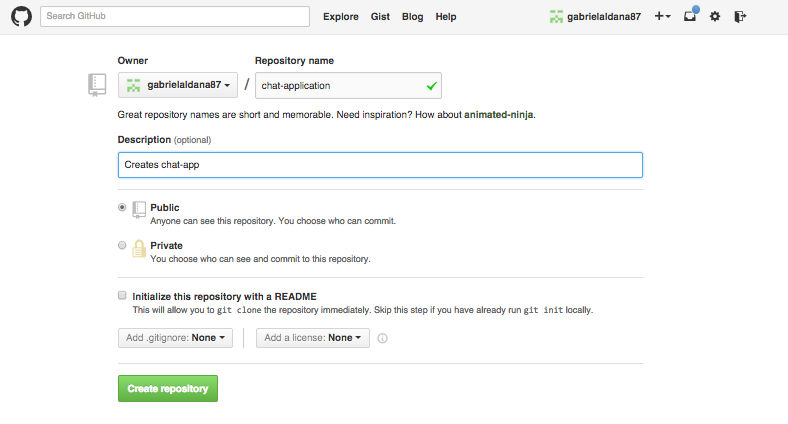

With this tutorial you will be able to build your own chat application in JavaScript from scratch. Scroll down to get started...
This tutorial has been developed to provide an overview of creating a basic Chat App using Web Sockets.
The following github repository has also been created to provide code snippets and links to all supporting\required software: github repo
Web Sockets is the next-generation of bidirectional communication for web applications and in now on it’s way to replace HTTP for realtime communication between clients and servers.
Some of the benefits of using WebSockets are:
Although the initial connection is initiated using the HTTP protocol it is subsequently upgraded to the WebSockets protocol during their initial handshake and both parties and begin sending data at any time.
We will be writing a client file using js to be able to communicate with the server.
In order to communicate with the server, we will need a few basic functonalities.
We will have to reference websockets within our client file, which we do so by introducing the following line.
var ws = new WebSocket("ws://localhost:3000");
First our client.js file needs to handle the event of opening a connection with the server.
ws.on("open",function() { console.log("Connected to server."); });
As our connection is realized, we console.log a message is also included which will provide the client with some notificaition they are connected.
We can likewise broadcast to our server that we have established a connection and can do so by using the ws.send method.
ws.on("open",function() { console.log("Connected to server."); ws.send("client connected!"); });
Our last event-handler will listen for messages being emitted from the server.
We do so by introducing ws.on("message"). This eventListener will also need to console.log data emitted from the server in order to see it in the console.
ws.on("message", function(data) { console.log(data); })
We will now be writing a server file using js to be able to communicate with the server.
In order to manage client connects, we will need a few basic functonalities.
Now it's time to move onto creating the server side code. The code example below contains all the required functionality which we can break down in sequence.
var WebSocketServer = require("ws").Server; var server = new WebSocketServer({port: 3000}); var userDb = []; server.on("connection", function(obj){ var user = {userName: "", userObj: obj}; userDb.push(user); user.userObj.send("Please type in your username and press enter") // ask for a username user.userObj.on("message", function(message) { if (user.userName === "") { user.userName = message.trim(); } else { var msg = message.trim("\n"); userDb.forEach(function(object) { if (object.userObj !== obj) { object.userObj.send(user.userName + ": " + msg); // send msg with your username } }); } }); user.userObj.on("close", function() { var x = userDb.indexOf(user.userObj); userDb.splice(x,1); user.userObj.close(); }); });
Creating a server first requires that we create an object that instantiates an instance of the WebSocket API server and configures it to listen on a specific port
//Loads the WebSocket API server object var WebSocketServer = require("ws").Server; //Instantiates an instance of the WebSocket server object var server = new WebSocketServer({port: 3000});
The server object has a method called "on", that acts as an event listener and executes an anonymous function when a new "connection" is detected. It is exectued only the first time a new client connects. The function requires a parameter that has been defined here as "obj" and represents the recently connected user.
server.on("connection", function(obj){
We then create an empty userDB array which will be used to keep track of all connections. An new user variable is then created to add additional properties to the existing user obj which is then pushed into the userDB array.
var user = {userName: "",userObj: obj}; userDb.push(user);
The next thing we do is send a new message to the client and request that they type in a user name. An if\else statement is used to determine if thier response message contains actual text and if so is trimmed, added to thier userName property and a new message sent to all connected users.
user.userObj.send("Please type in your username and press enter") // ask for a username user.userObj.on("message", function(message) { if (user.userName === "") { user.userName = message.trim(); } else { var msg = message.trim("\n"); userDb.forEach(function(object) { if (object.userObj !== obj) { object.userObj.send(user.userName + ": " + msg); // send msg with your username } }); } });
Lastly we add some code to deal with "close" events which is triggered when a user disconnects from the server. The code below uses the splice methond on the userDB array to remove the client from the array
user.userObj.on("close", function() { var x = userDb.indexOf(user.userObj); userDb.splice(x,1); user.userObj.close(); });
Now that you have created both a client.js file and a server.js, you can start communicating with other clients. As an example of the chat app capabilities of integrating wscat in your website, now that you have both server and client files, you can test locally. We do so by running the server.js file on your terminal:
In a new terminal window type in the following command to run your client.
Open a second terminal window and open up another client.
Start chatting with your clients!
In your github page, create a new repository by right hand-clicking "new repository" on the drop-down box next to your name.
Name your new repository and include a description.
Click "Submit" and follow the instructions indicated on github to push up your repository to github.
Get into the habit of commiting your work to github.The first set of commands inititalizes your git repository.
+ Once all changes have been commited to the github repository the last and final step will be to connect to Digital Ocean and + host the files using an http-server. If you don't already have one click here to register for a new Digital Ocean acocunt.
+ +The following steps will need to be performed
+To connect to your server open a local command prompt and login using the following:
+Clone your github repo using the following commands:
+Install and activate the http-server using npm by typing the following command:
+You have now completed the tutorial